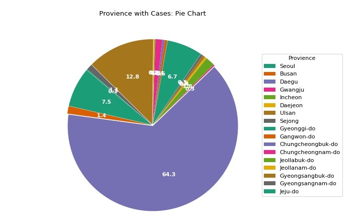
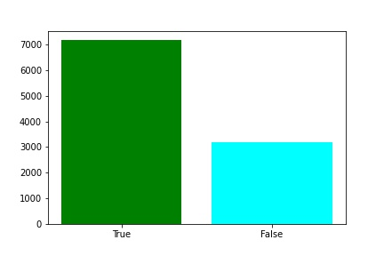
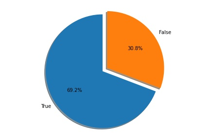
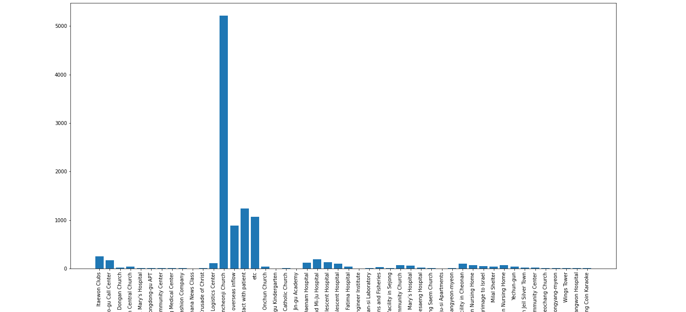
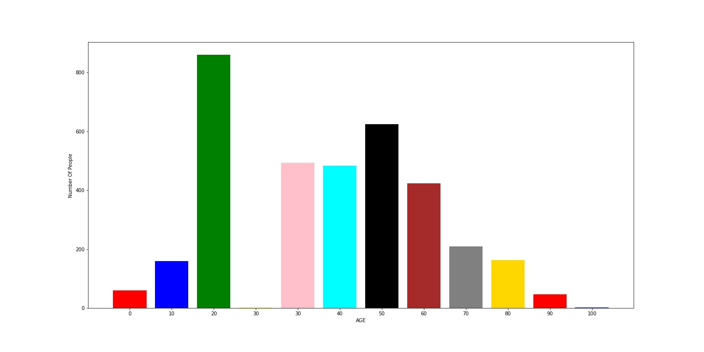
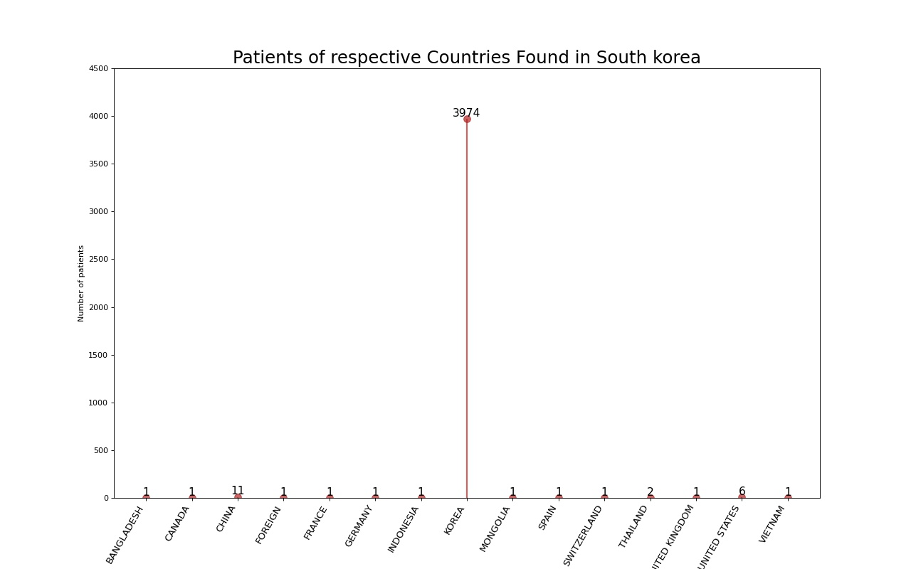
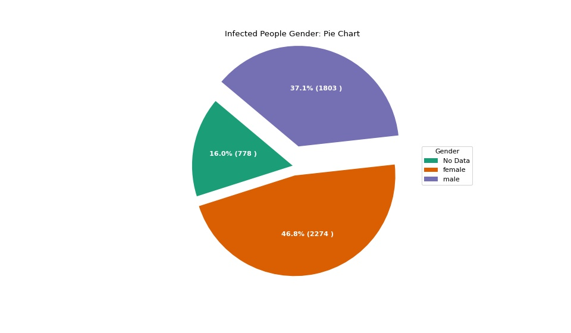
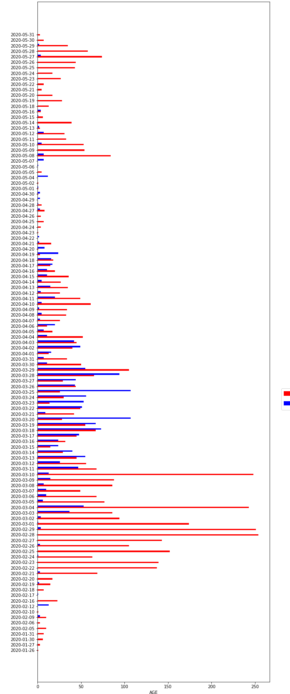
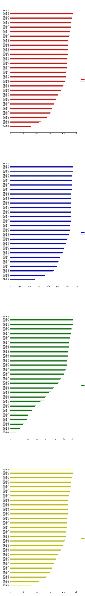

Provience To That has highest number of confirmed Cases

Observation
DAEGU IS THE PROVIENCE WHICH HAS 64.3% OF CONFIRMED CASES IN SOUTH KOREA.
SO THE PEOPLE OF DAEGU PROVIENCE SHOULD BE VERY CAREFUL TILL THIS INFECTION ENDS.
BAR PLOT AND PIE PLOT TO FIND The infection Spread in Groups and Non Groups

Observation
Groups are highly responisible for the infection spread.
So there is the high chance the you will be infected if you are not isolated from various groups.
Finding the epic center for infection spread

Observation
Shincheonji Church Is THE EPI CENTER IN SOUTH KOREA For The Infection Spread.
Contant With Patient Is Also The Main Reason For The Infection Spread.
Based on Age

Observation
Most of Patients who are infected are around the age group of 20 years.
Here Roughly speaking all the age group are effected by the infection so no age is immune to this infection.
Patients of respective Countries Found in South korea

Observation
As Expected since all these Cases are in south Korea we can see almost all the effected people are from same country iteself and very few people from other countries.
Infected People Gender

Observation
46.8% of Female population are Effected.
Most of the people who effected are Females.
Roughly speaking both male and female are similary Effected so infection spread doesnot depend of sex much.
Analysis on Few Patients on the records

Observation
Here we can see That earlier There were many confirmed_cases and actually recovery of patients started from 02-17-2020 and as the time past raising of infected cases started decreasing and released_cases started incresing and after again we can see more confirmed cases but during that they are many people recoverd as well but we donot have proper data regarding it
So As per the records
Here 05-11-2020 is the only after a long time where we could actual see again raise in the cases
Here we saw highest raise in the cases on 02-28-2020 with 254 patients confirmed
Highest recovery of cases on 2020-03-25 and 2020-03-20 with 107 patients recoverd
Infected Cases and Recovered Cases Based on Date and gender

Observation
Here we can see that the Number of confirmed Cases for Female is little bit high than the confirmed Cases for male.The Reason is more Feamles are effected to virus than males.
Also we can see there fairly the Number of recovered Cases for Male and Female are almost Similar.